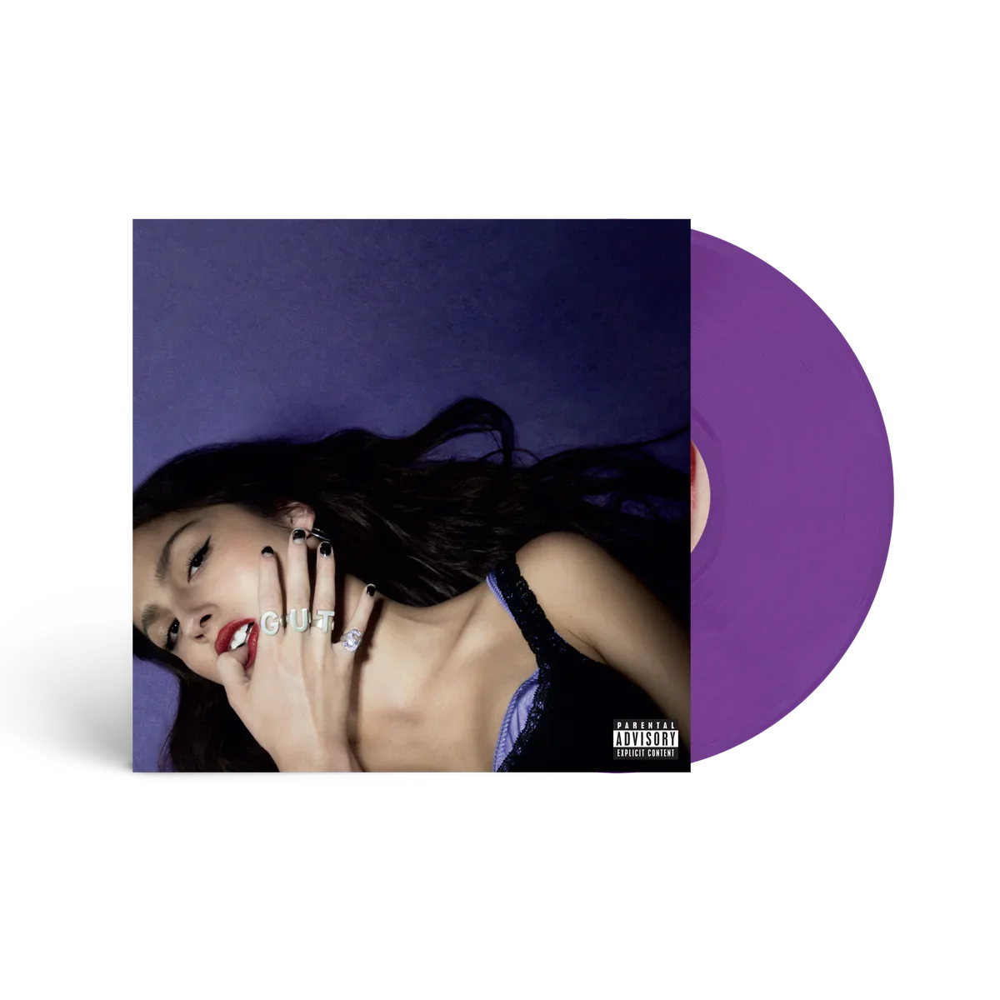

Lançamento do Próximo Álbum
Album de Musica - Guts
Influências do Álbum "GUTS" de Olivia Rodrigo
O álbum "GUTS" de Olivia Rodrigo é fortemente influenciado pelo pop punk e rock dos anos 2000, refletido em suas guitarras distorcidas e batidas enérgicas. Olivia também se inspira no pop e indie pop para criar melodias cativantes e produções sofisticadas. Além disso, as letras do álbum são marcadas por uma abordagem introspectiva e pessoal, explorando temas de amor e desilusão, enquanto também aborda as pressões da fama e das redes sociais.
Faixas
- All-American Bitch
- Bad Idea Right?
- Vampire
- Lacy
- Ballad of a Homeschooled Girl
- Logical
- Get Him Back!
- Love Is Embarrassing
- The Grudge
- Pretty Isn't Pretty
- Teenage Dream
- Happier
Plataformas de Stream